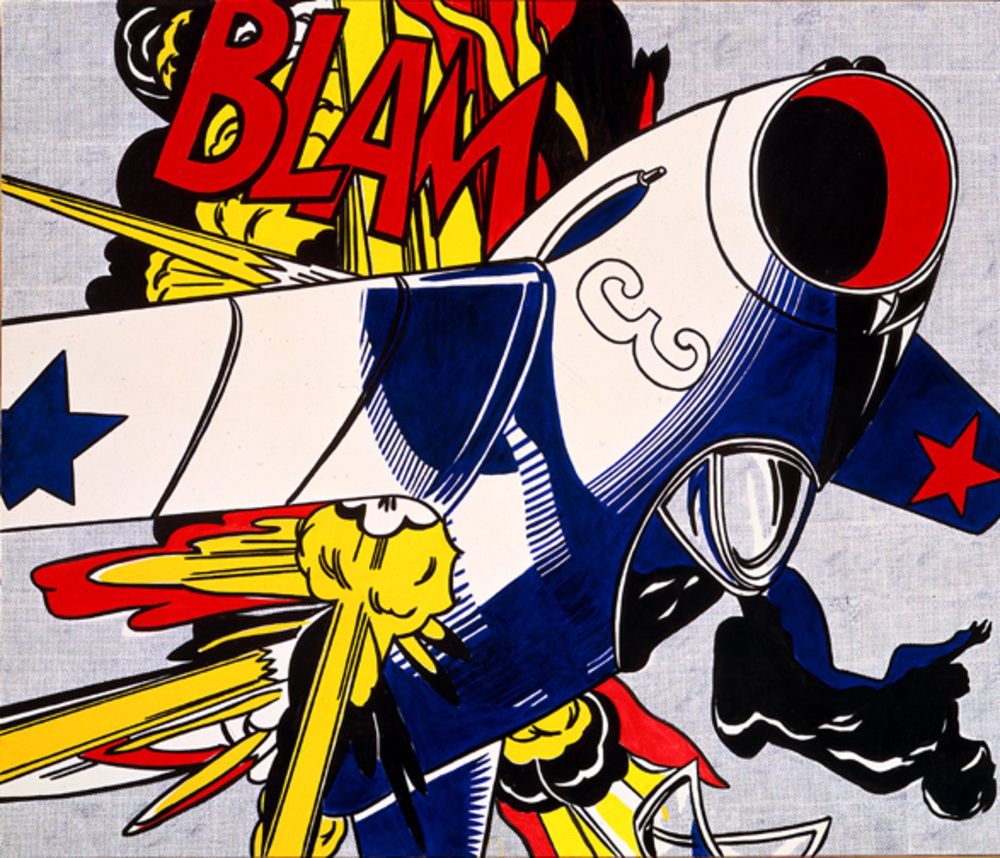

Blam
Dimensions: 172.7 cm × 203.2 cm
Year: 1962
Movement: Pop Art
Blam is a jest with the viewer that uses an exclamation without narrative context.
Like Blang (1962) and Varoom (1963), Blam's onomatopoeia explodes "like a violent central sun over the entire composition".
Lichtenstein has revised the original source so that the aircraft and its explosion are the joint foci from which the painting radiates.
Unlike the original, which had substantive narrative content, Lichtenstein's version has more formality and a linear pattern, but a more simplified surface.